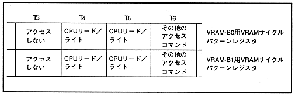

Figure 3.7 Example of CPU read / write access specification when dividing VRAM into 2 banks

(1) Select the TV screen mode. (2) Decide whether to divide VRAM into two. (3) Decide the number of character colors and reduction setting of the scroll screen to be displayed. Also, decide whether to use the vertical cell scroll function. (4) Image data required for each scroll screen (pattern name data, key (Character pattern data, bitmap pattern data) Determine the bank of VRAM. When using the vertical cell scroll function Also includes a VRAM bank that stores vertical cell scroll table data going to decide. (5) Decide whether to perform read / write access by the CPU. (6) To ensure that the specified access timing restrictions are observed, Specify the access command to the curl pattern register.